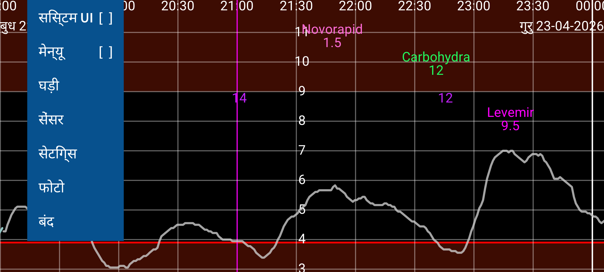
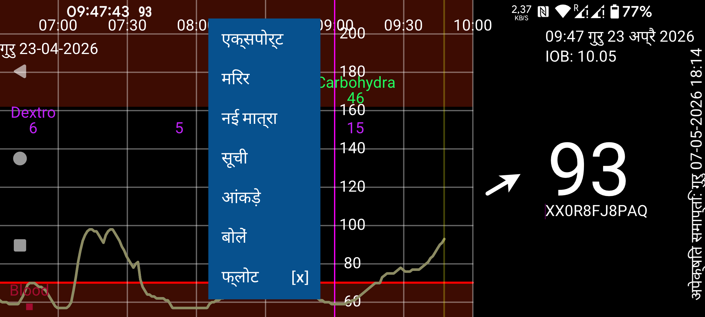
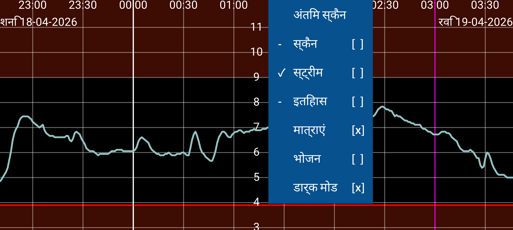
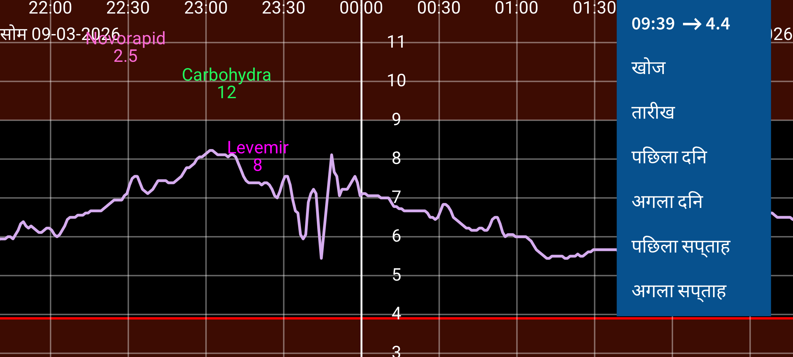

Juggluco मधुमेह वाले लोगों द्वारा रक्त ग्लूकोज के नियंत्रण के लिए एक एप्लेट है। यह Freestyle Libre (0 और 2) सेंसर (NFC के माध्यम से) स्कैन कर सकता है और Freestyle Libre 2, 2+, 3, 3+, Sibionics GS1Sb, Dexcom G7/ONE+, Accu-Chek SmartGuide, CareSens Air और Linx/Lumiflex/Aidex X सेंसर से (ब्लूटूथ के माध्यम से) ग्लूकोज मान प्राप्त कर सकता है।
जब प्रोग्राम पहली बार चलाया जाता है, तो आप एक Freestyle Libre 2 सेंसर को अपने स्मार्टफ़ोन में NFC सेंसर के पास रखकर स्कैन कर सकते हैं। इसके बाद Juggluco Freestyle Libre 2 सेंसरों से ब्लूटूथ कनेक्शन प्राप्त करने का प्रयास करेगा और स्कैन किए बिना हर मिनट एक ग्लूकोज मान प्राप्त करेगा। Abbott के Libre 3 ऐप से सक्रिय किए गए FreeStyle Libre 3 या 3+ सेंसर को अपने पास लेने के लिए, आपको वह Libreview अकाउंट जानकारी सेटिंग्स->डेटा आदान-प्रदान->Libreview में निर्दिष्ट करनी होगी जिसका उपयोग आपने सेंसर सक्रिय करने के लिए किया था, "Account ID प्राप्त करें" दबाएं और स्कैन करने से पहले Account ID आने की प्रतीक्षा करें। Libre 2 और Libre 3 दोनों के लिए FreeStyle Libre 3 रीडर या USA Libre ऐप से शुरू किए गए Libre 3 सेंसर को अपने पास लेना संभव नहीं है। उल्लिखित सभी सेंसर Juggluco के साथ उपयोग किए जा सकते हैं जब वे किसी अन्य ऐप से सक्रिय नहीं किए गए हों।
Sibionics GS1Sb, Dexcom G7/ONE+, Accu-Chek SmartGuide, CareSens Air या Linx/Lumiflex/Aidex X सेंसर से कनेक्ट होने के लिए आपको उनके डेटा मैट्रिक्स को बाएं मेन्यू->फोटो से स्कैन करना होगा। Dexcom G7/ONE+ सेंसर ब्लूटूथ के माध्यम से पेयर किए जाते हैं, जिसे आपको अधिकांश फोन पर स्वीकार करना होता है। सहमति आपको बहुत तेज़ी से देनी होती है अन्यथा आपको फिर से 5 मिनट प्रतीक्षा करनी होगी। तो स्क्रीन को बंद होने से रोकें। Samsung Galaxy Watch 4 और 7 पर आपको पेयर करने के लिए सहमत होने की आवश्यकता नहीं है। खत्म हो चुके Dexcom G7/ONE+ सेंसर ग्लूकोज मान रिकॉर्ड करना बंद करने के बाद भी लंबे समय तक ब्लूटूथ के माध्यम से सक्रिय रहते हैं। Juggluco को गलत सेंसर से पेयर करने का प्रयास करने से रोकने के लिए, पुराने सेंसरों को ब्लूटूथ पहुंच से बाहर रखें (उदाहरण के लिए माइक्रोवेव में 15 मीटर दूर), विशेष रूप से जब एक पुराने सेंसर का नए सेंसर के समान पिनकोड हो। उन ऐप्स और डिवाइसों को बंद (फोर्स स्टॉप या अनइंस्टॉल) करें जो पहले सेंसर से कनेक्ट थे। Accu-Chek SmartGuide सेंसरों की पेयरिंग के दौरान एक पिन दर्ज करने की आवश्यकता होती है।
सेंसरों से कनेक्ट होने के बारे में अधिक जानकारी के लिए https://www.juggluco.nl/Juggluco/sensors देखें।
प्रोग्राम में चार मेन्यू हैं; डिस्प्ले के किसी खाली भाग को छूकर आप एक मेन्यू खोल सकते हैं। स्क्रीन के बाएं चौथाई भाग पर स्पर्श बायां मेन्यू खोलता है, मध्य भाग के बाएं पक्ष पर दूसरा मेन्यू खुलता है और मध्य के दाएं भाग पर तीसरा मेन्यू और स्क्रीन के दाएं चौथाई भाग पर चौथा मेन्यू खुलता है।
मेन्यू 4: गति (दाएं)
15:10 ↗ 93 |
तारीख |
पिछला दिन |
अगला दिन |
पिछला सप्ताह |
अगला सप्ताह |
स्क्रीन पर बाएं और दाएं हिलाकर आप वक्र को बाएं और दाएं ले जा सकते हैं। आप दाईं ओर गति मेन्यू का उपयोग करके भी ले जा सकते हैं। एक तारीख चुनने के लिए तारीख, ग्लूकोज मान और दर्ज संख्याएं खोजने के लिए खोज का उपयोग करें। दाएं मेन्यू का पहला आइटम वर्तमान समय है और इसे चुनकर आप ग्राफ़ के दाईं ओर (अभी) कूद जाते हैं।
यदि मैन्युअल रूप से स्केल ग्लूकोज सेटिंग्स में सेट है, तो स्क्रीन के ऊपरी भाग में ऊपर और नीचे हिलाने से ग्राफ़ का अधिकतम बदलता है, निचले भाग में यह न्यूनतम बदलता है। यदि मैन्युअल रूप से स्केल समय सेटिंग्स में सेट है, तो आप दो उंगलियों के बीच की दूरी बदलकर स्क्रीन पर प्रदर्शित समय की मात्रा को बढ़ा या घटा सकते हैं।
मेन्यू 3: डिस्प्ले
अंतिम स्कैन |
स्कैन [x] |
स्ट्रीम [x] |
इतिहास [x] |
मात्राएं [x] |
भोजन [ ] |
डार्क मोड [x] |
मध्य मेन्यू के दाईं ओर डिस्प्ले विकल्प होते हैं। अंतिम स्कैन देखने के लिए, पहले आइटम को छुएं। स्कैन के बाद एक क्रॉस का मतलब है कि स्कैन ग्राफ़ में प्रदर्शित होते हैं। स्कैन वर्तमान ग्लूकोज मान है जो आपको Libre 0 या 2 सेंसर स्कैन करने पर मिलता है। स्कैनिंग पिछले 8 घंटों के 15 मिनट के मापन को भी सेंसर से स्मार्टफ़ोन में स्थानांतरित करती है। इन मानों का प्रदर्शन इतिहास छूकर नियंत्रित किया जा सकता है। Libre 3 सेंसर इतिहास मान ब्लूटूथ से भेजते हैं और वे हर 5 मिनट में होते हैं। स्ट्रीम का मतलब Freestyle Libre 2 और 3 सेंसरों से ब्लूटूथ के माध्यम से हर मिनट इस एप्लेट को भेजे जाने वाले ग्लूकोज मान हैं।
आप अपनी इंसुलिन, कार्बोहाइड्रेट और गतिविधियों का दस्तावेज़ीकरण करने के लिए सभी प्रकार की संख्याएं (जो भी लेबल आपको पसंद हो) दर्ज कर सकते हैं। वे निर्दिष्ट समय और तारीख पर ग्लूकोज ग्राफ़ में निश्चित ऊंचाई पर प्रदर्शित होती हैं। ग्राफ़ में बिंदुओं या दर्ज संख्या को छूने से उस आइटम के बारे में जानकारी मिलती है। आप एक दर्ज संख्या को लंबा छूकर संपादित कर सकते हैं। संपादन बाएं मध्य मेन्यू में संख्या सूची और संबंधित डेटा तत्व को छूकर भी संभव है। मात्राएं दर्ज संख्याओं के प्रदर्शन को निर्धारित करती हैं। सेटिंग्स में, आप निर्दिष्ट कर सकते हैं कि आप इन संख्याओं के लिए कौन से लेबल उपयोग करना चाहते हैं। एक संख्या के ऊपर संबंधित लेबल दिखाया जाता है।
मेन्यू 2: मध्य के बाएं
सूची |
फ्लोट [ ] |
आप इन संख्याओं को मध्य मेन्यू के बाएं में नई मात्रा छूकर दर्ज कर सकते हैं। एक्सपोर्ट डेटा को .tsv (tab separated values) प्रारूप में एक फ़ाइल में सहेजता है। मिरर एक अलग डिवाइस पर चल रहे इस ऐप को IP/TCP के माध्यम से डेटा भेजना संभव बनाता है ताकि वही जानकारी प्रदर्शित हो सके। सूची दर्ज की गई संख्याओं की एक सूची देती है। यदि Juggluco को ब्लूटूथ के माध्यम से पर्याप्त ग्लूकोज मान मिले हैं, तो आप आंकड़े छूकर कुछ आंकड़े देख सकते हैं। यह कुछ ग्लूकोज श्रेणियों में मापन का प्रतिशत, Glucose Management Indicator (HbA1c का भविष्यवक्ता), ग्लूकोज परिवर्तनशीलता और एक सारांश ग्राफ़ दिखाता है जो प्रत्येक क्षण दिन के लिए उस ग्लूकोज मान को दिखाता है जिसके नीचे 100%, 95%, 75%, 50%, 25% और 0% मान हैं। बोलें में आप Juggluco को आने वाले ग्लूकोज मान, ग्राफ़ के छुए गए तत्व या संदेश बोल सकते हैं। फ्लोट फ्लोटिंग ग्लूकोज चालू करता है। अन्य ऐप्स के ऊपर स्क्रीन पर मौजूद एक ग्लूकोज मान। सेटिंग्स में आप इसका रंग और आकार बदल सकते हैं।
मेन्यू 1: बायां
सिस्टम UI [ ] |
मेन्यू [ ] |
फोटो |
बंद |
बाएं मेन्यू में, आप सेटिंग्स पा सकते हैं, ग्लूकोज इकाई को mmol/L या mg/dL पर सेट करने के लिए, निर्दिष्ट करने के लिए लेबल, ग्लूकोज अलार्म और दवा अनुस्मारक सेट करने के लिए और डिस्प्ले सीमा। सिस्टम UI यह निर्धारित करता है कि Android नियंत्रण और स्टेटस बार दिखाए जाते हैं या नहीं। घड़ी में आप सभी प्रकार की स्मार्टवॉच को डेटा भेजने के लिए Juggluco को निर्दिष्ट कर सकते हैं। सेंसर में, आप देख सकते हैं कि सेंसर से कनेक्शन कैसे चल रहा है। मेन्यू को छुएं ताकि सभी उल्लिखित मेन्यू एक ही समय में इस तरह से दिखाए जाएं जिसे talkback द्वारा पढ़ा जा सके। बंद का उपयोग Juggluco से बाहर निकलने के लिए किया जा सकता है।